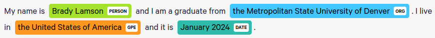

Overview and Motivation
Here I’ll be showing a standard workflow for fine tuning a large language model using the transformers library in Python. I’ll be fine tuning for the specific downstream task of named entity recognition, though many things in this setup will work for other tasks as well.
There are many sources online for this topic, but I found myself extremely overwhelmed by all of the information when first learning how to do this. My goal here is to consolidate all of that information and add in a lot of my own thoughts along the way to hopefully help make this area less overwhelming.
In terms of knowledge coming in, this page is intended for a data scientist who is comfortable reading code and technical documentation. A basic understanding of machine learning and natural language processing is expected. I will be explaining much of the jargon, but not all of it.
For a repository to follow along with, I have a notebook that will be showing my process from start to finish. <Here is a link to that notebook>.
Our goal here is to take a pretrained large language model and have it extract specific “entities” from a given text. To do that, we need to fine tune it for our specific needs. First off, what are these entities and what is named entity recognition?
Named Entity Recognition
Without going into too much detail, named entity recognition, or NER for short, is a type of token classification that allows for us to identify key parts of text. As an example, a model can predict which words in a sentence represent people, places, organizations, etc. The best way to explain NER is with a visual.

This is an extremely useful task, as being able to identify key parts of bulk text has a ton of applications. You can even choose what entities you want to identify so there’s a ton of creative freedom here. You could web scrape a site and easily extract the big names on its pages. From a tech tutorial example, you could use NER on a ton of writeups like these to see which packages and tools come up the most!
In particular this has a lot of applications in bulk messy text that you want classified. Being able to identify the date or company name of a giant text blob could be extremely useful for expediting some data processing. It’s never going to be perfect, but it can be extremely powerful.
Fine Tuning
Fine tuning is simply a type of training you do to models that already exist. We don’t want to make a model from scratch, but most models by default aren’t capable of what we’re trying to do and aren’t going to be familiar with the type of data we’re using. Thus, we need to modify them a bit.
As an example, for this project we’ll be using the distilibert-base-uncased model. To put it simply, it’s a smaller version of BERT that ignores capitalization. From the <model docs> specifically:
Intended uses & limitations
You can use the raw model for either masked language modeling or next sentence prediction, but it’s mostly intended to be fine-tuned on a downstream task. See the <model hub> to look for fine-tuned versions on a task that interests you.
Note that this model is primarily aimed at being fine-tuned on tasks that use the whole sentence (potentially masked) to make decisions, such as sequence classification, token classification or question answering. For tasks such as text generation you should look at model like GPT2.
Downstream Tasks
Downstream Tasks are tasks like “named entity recognition”, “text classification” and other more niche language tasks. A better explanation is provided by <Baeldung here in their overview on downstream tasks>. Here’s a relevant excerpt.

So, our goal is to take our model of choice and get it used to our data and entities. To do that, we fine-tune the model! That’s the plan.